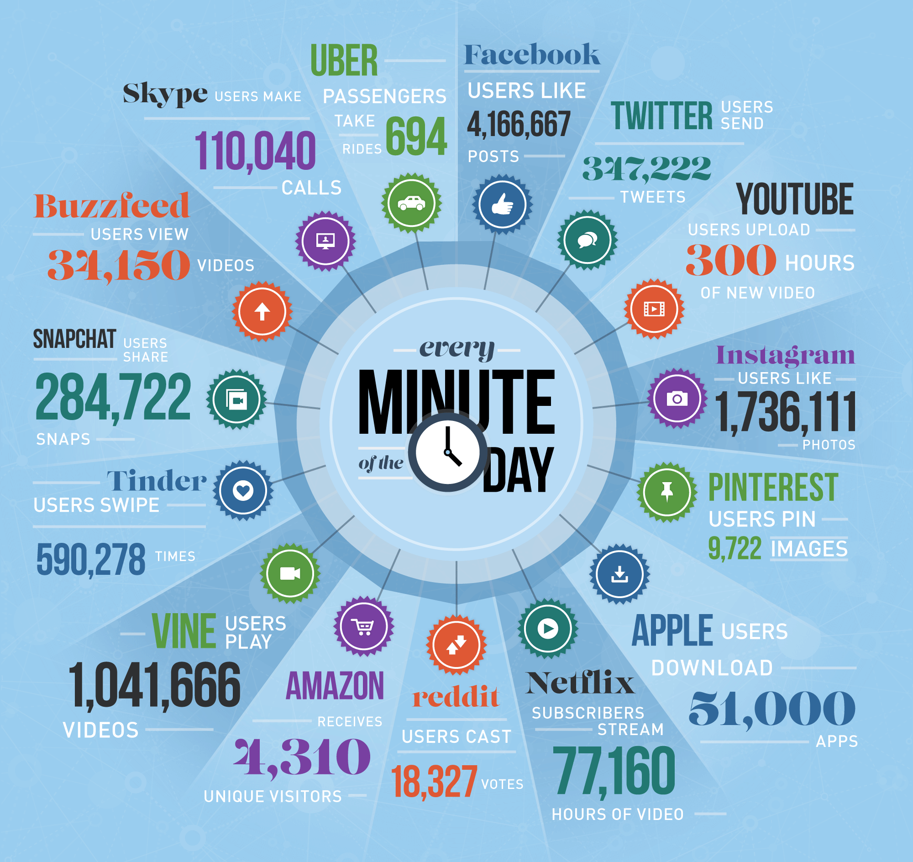
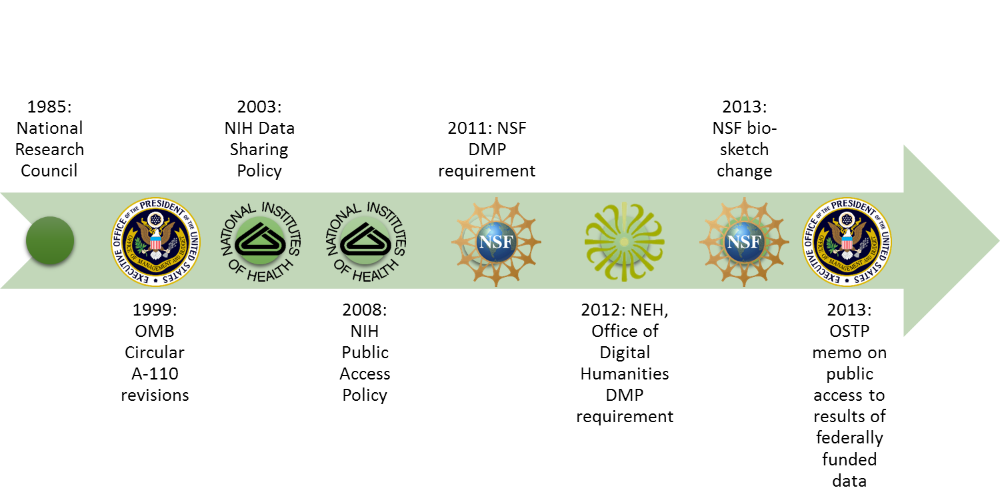
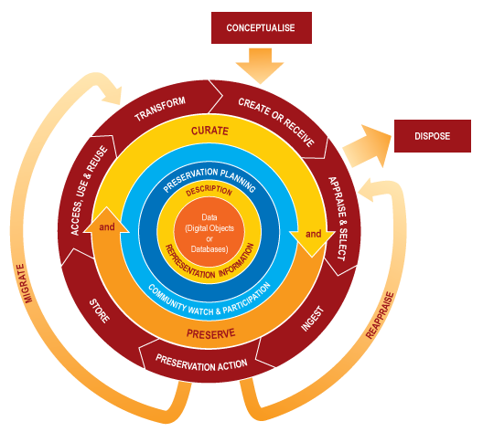
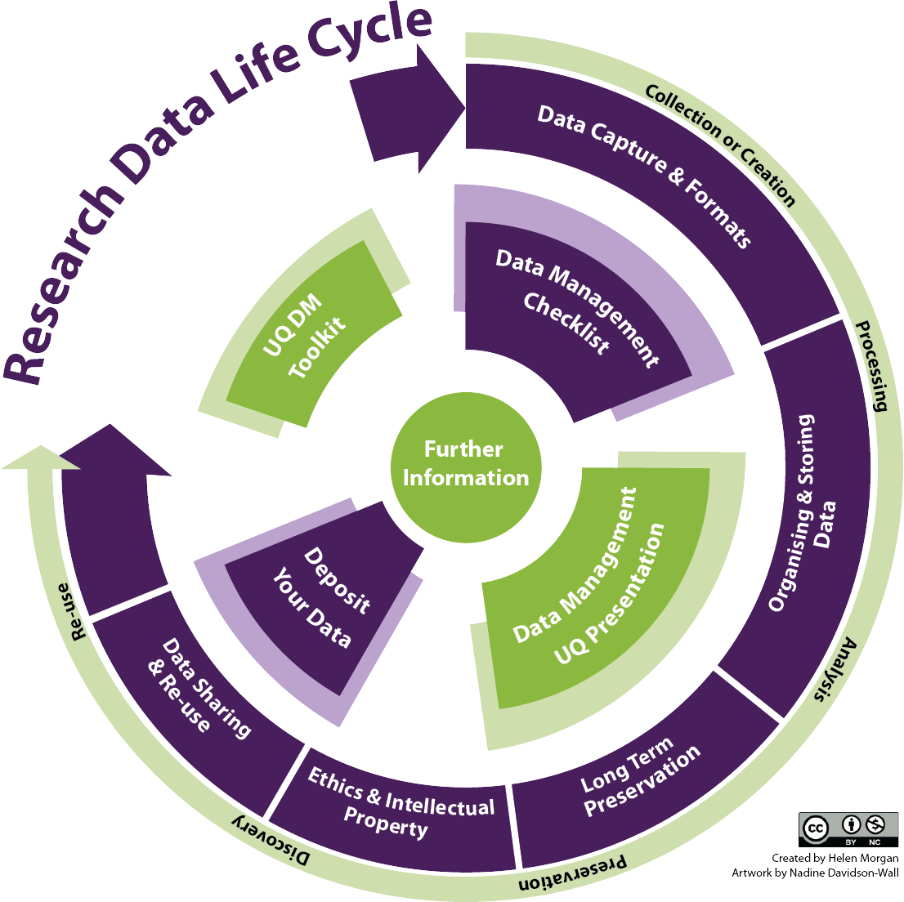
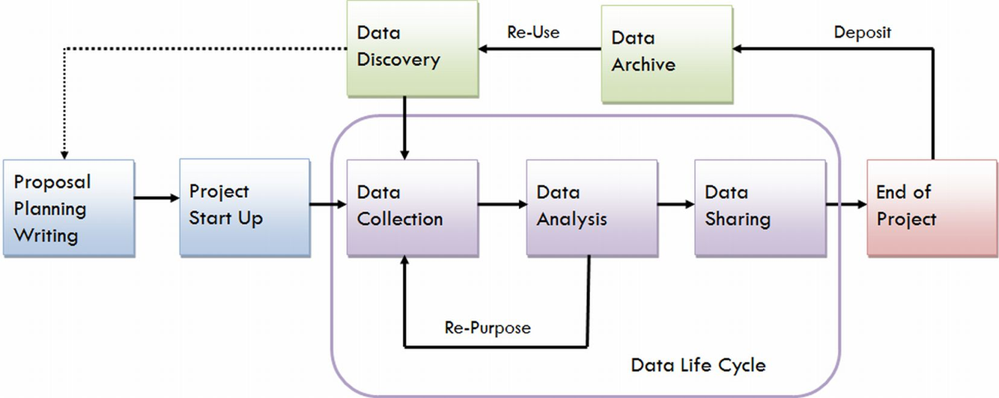
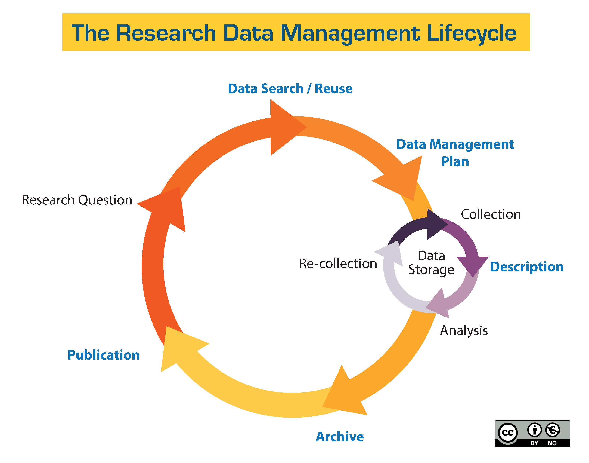

Data Management in the
Research Environment
Research Environment
RSM 674 Spring
Dr. Timothy Norris - Data Curation Fellow - tnorris@miami.edu
Angela Clark - Librarian Associate Professor RSMAS - aclark@rsmas.miami.edu
Angela Clark - Librarian Associate Professor RSMAS - aclark@rsmas.miami.edu
Course Overview
- Why manage data / what is data management
- Data lifecycle and data management plans
- Data types, stages and formats
- Data organization / tips, tools and techniques
- Research data profiles
- Contextual Metadata
- Software carpentry: git bash command line, python, r, and basic versioning
- Intellectual property and licensing
- Sharing data, data repositories and data preservation
Class Schedule
- Week 1: Course Introduction and Overview: What is data and why are we here?
- Week 2: The Research Data Lifecycle
- Week 3: Data Types, Stages, and Formats
- Week 4: Data Storage, Backup and Security
- Week 5: Sharing and Reuse: Intellectual Property and Licensing
- Week 6: Data Curation Profiles
- Week 7: Introduction to BASH Shell
- Week 8: Metadata and Contextual Details
- Week 9: Versioning and Git
- Week 10: Introduction to R
- Week 11: Finding and Cleaning Data
- Week 12: Introduction to Python
- Week 13: Repository Identification / Preparation for Preservation / Unique Identifiers
- Week 14: The Semantic Web
- Finals Week:
[ Turn in Assignment #1 ]
[ Turn in Assignment #2 ]
[ Turn in Midterm Project ]
[ Turn in Assignment #3 ]
[ Turn in Assignment #4 ]
[ Turn in Assignment #5 ]
[ Turn in Final Project ]
what you expect / what we expect
syllabus review
- Two credit course - moderate load - reading most weeks with a few breaks
- Two major assignments
- Midterm assignment: written document based on ongoing research either in your advisors lab or in a colleagues lab. DUE WEEK 8 (30% OF GRADE)
- Final Assignment: Either a written data management plan for your research (or your lab’s research) or a dataset prepared for repository deposit. DUE FINALS WEEK (40% OF GRADE)
NOTE: there is no final exam
- Several minor assignments
This class IS:
- about interdisciplinary problem solving
- personal and professional practice
- broad thinking
This class IS NOT:
- computer science
- database adiminstration
- research methods (how to collect data)
your participation ...
... is important
10% OF GRADE
10% OF GRADE

Big Data

Navarro, Fran (2014). Foco en Almacenamiento. http://www.slideshare.net/franmod/tendencias-storage. Slide 42.
Why Manage Data
- Productivity
- Publishing
- Knowledge creation
- Career advancement
- Compliance
- Grant writing
- University policy
- Research Ethics
¿SOMETHING ELSE?
The Data Deluge
Data Sharing Requirements
- NIH: October 2003
Data Management Requirements
- NSF: January 2011
- NEH: June 2011
The 2013 OSTP Memo: Open Data
- Federally funded research results should be made accessible to the public
- Both peer-reviewed publications and data
Federal Movement Towards Open Data

Whitmire, Amanda L. (2014). Research Data Management Curriculum, Lecture 2: Introduction to Research Data Management.
Oregon State University Libraries. http://figshare.com/articles/GRAD521_Research_Data_Management_Lectures/1003835
Oregon State University Libraries. http://figshare.com/articles/GRAD521_Research_Data_Management_Lectures/1003835
The 2013 OSTP Memo
- Transparency and efficiency
- Growth, security, value
- Commercial re-use and innovation
- Data (from OMB Circular 110):
“Data is defined … as the digitally recorded factual material commonly accepted in the scientific community as necessary to validate research findings including data sets used to support scholarly publications, but does not include laboratory notebooks, preliminary analyses, drafts of scientific papers, plans for future research, peer review reports, communications with colleagues, or physical objects, such as laboratory specimens.”
Lots of sticks!!
adapted from http://bit.ly/FedOASummary
Next Steps?
Some Useful Abstractions

“Information is not knowledge.
Knowledge is not wisdom.
Wisdom is not truth.
Truth is not beauty.
Beauty is not love.
Love is not music.
Music is THE BEST.”
― Frank Zappa
| Active vs. Static: | Data Storage: | Example or Focus: | Typical File Formats: |
| ACTIVE | Raw Data: | Temperature readings over time | Paper? Device-specific? .xlsx, … |
| Processed Data: | “Cleaned,” normalized temperature data compiled in spreadsheet | .xlsx, .sas, … | |
| Analyzed Data: | Temperature data with averages computed, graphs charted | .xlsx, .sas, … | |
| STATIC | Finalized, Published Data: | Do the data support hypothesis? | .csv |
adapted from http://classguides.lib.uconn.edu/
Data?
Numbers
Words
Citations / references
Notebooks / marginalia
Specimens
Field Samples
Images
Videos / sound recording
Relationships
Models
Code
Words
Citations / references
Notebooks / marginalia
Specimens
Field Samples
Images
Videos / sound recording
Relationships
Models
Code
Data?
“Examples of Research Data and Materials include laboratory notebooks, notes of any type, photographs, films, digital images, original biological and environmental samples, protocols, numbers, graphs, charts, numerical raw experimental results, instrumental outputs from which Research Data can be derived and other deliverables under sponsored agreements.”
Johns Hopkins University (2008) - http://jhuresearch.jhu.edu/Data_Management_Policy.pdf
Data?
Definitions: The term “Research Data” in this document refers to information recorded and/or collected for research performed at or under the auspices of the University regardless of the form or the media upon which it is recorded. This term includes, but is not limited to, computer programs (code and documentation), computer databases, instrumental outputs, raw numerical results, original biological or environmental samples, photographs, digital images, films, protocols, graphs, and other deliverables produced under sponsored agreements. Research Data also includes any records related to the design, conduct or reporting of the research that would be necessary to reconstruct the reported research results. Research data can be intangible (statistics, findings, conclusions, etc.) and tangible (notebooks, printouts, etc.).
Data is an Innovation?
Innovations: patentable or un-patentable inventions, discoveries, processes, compositions, research tools, data, ideas, databases, know-how, copyrightable works that are not scholarly or artistic Creations and tangible property, including biological organisms, engineering prototypes, drawings, and software created, conceived or made by Applicable Personnel within their normal duties (including clinical duties), course of studies, field of research or scholarly expertise or making more than Incidental Use of University’s resources. (2016-17 Faculty Manual, p. 136)

Data Curation Lifecycle
Data Curation Center (DCC)
Data Curation Center (DCC)
UC Davis



UC Santa Cruz


University of Miami Libraries
Research Data Management
Before: Data Management Planning / Grant Process
During: Compliance and Productivity
After: Publication and/or Repository Deposit
During: Compliance and Productivity
After: Publication and/or Repository Deposit
Before: Data Management Planning / Grant Process
During: Compliance and Productivity
After: Publication and/or Repository Deposit
During: Compliance and Productivity
After: Publication and/or Repository Deposit
Privacy/Security Considerations
Storage and backup strategies
File System Organization
File Naming Conventions
File Format Choice
Documentation and metadata
Roles and responsibilities in research environment
Sharing and collaboration strategies
Ownership of data
Access strategies / Access restrictions
Storage and backup strategies
File System Organization
File Naming Conventions
File Format Choice
Documentation and metadata
Roles and responsibilities in research environment
Sharing and collaboration strategies
Ownership of data
Access strategies / Access restrictions
Before: Data Management Planning / Grant Process
During: Compliance and Productivity
After: Publication and/or Repository Deposit
During: Compliance and Productivity
After: Publication and/or Repository Deposit
Follow file naming, organization and format conventions
Documentation and metadata
Acquiring and cleaning data
Regularly backup all data
Be mindful when sharing / version control
Access / privacy policy enforcement
Documentation and metadata
Acquiring and cleaning data
Regularly backup all data
Be mindful when sharing / version control
Access / privacy policy enforcement
Before: Data Management Planning / Grant Process
During: Compliance and Productivity
After: Publication and/or Repository Deposit
During: Compliance and Productivity
After: Publication and/or Repository Deposit
Publish
Deposit in a repository
Deposit in a repository
What is a Data Management Plan
The Data Management Plan is a written document that describes the data you expect to acquire or collect throughout a research project, how you will collect, organize, document, and analyze the data, and finally how you will share, publish and preserve the data.
Data Management Plans
- Information about Data and Data Formats
- Metadata Content and Format
- Policies for access sharing and re-use
- Long-term storage and preservation
- Budget
Evaluate a DMP
- Describes what types of data will be captured, created or collected
- Describes how data will be collected, captured, or created (observations, models, reuse, etc.)
- Identifies how much data (volume) will be produced
- Describes how the data will be made publicly available
- Provides details on when the data will be made publicly available
| Complete/ detailed | Addressed issue, but not complete | Did not address |
Other criteria??
Quick Review: Data Management Plans
- Information about Data and Data Formats
- Metadata Content and Format
- Policies for access sharing and re-use
- Long-term storage and preservation
- Budget
BUT it always will depend on your goals and the funder’s goals
Why Manage Data
- Productivity
- Publishing
- Knowledge creation
- Career advancement
- Compliance
- Grant writing
- University policy
- Research Ethics